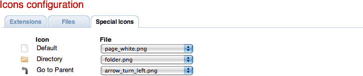
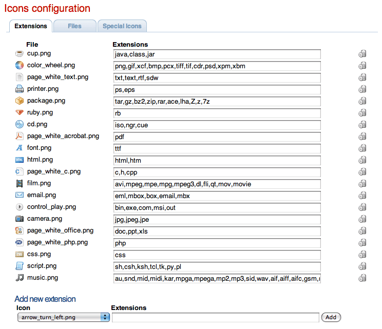
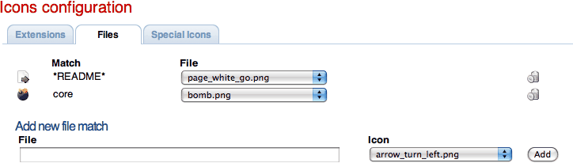

Icons
The icons configuration file associates an icon image with one or more
file extensions. This information will be used mainly by the dirlist handler.
Files
- This section lets you specify an icon for certain filenames such as "core" or "README".
It accepts wild-card strings (using * and ?)

Extensions
- In the same way, it allows to associate icons with extensions

Special icons
- Directory: In this case, it specifies the icon to be used with Directories.
- ParentDirectory: This entry is used to assign an Icon to the "go to the parent
directory" action.
- Default: This is the icon that will be shown if any of the previous ones matched.
